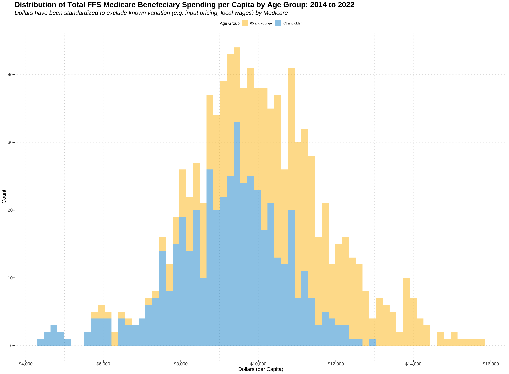

Amount and quality of health services received vary substantially across different regions and subgroups within. The cause of this variation does not appear to be a result of differences in social-determinants, and estimates show that 30% of expenditures may be unnecessary or waste (John Wennberg et al, 2008). Moreover, in 2021, 5% of the population accounted for nearly half (48.4%) of total health expenditures in the United States1. High-Need High-Cost Patients have been the focus of utilization tracking in the health care by all stakeholders. There has been no formal definition to this population but it is understood by most health experts that 1) they represent a small subset of the population and 2) disproportionately have higher spending than their counterparts. The ability to clearly define this subset of the population, observe their health needs, and analyze differences in utilization, spending, and quality of care across various factors can provide additional insight to US health expenditures, drive actionable change, and produce targeted initiatives. The Fee for Service Geographic Variation User File was created by the CMS in efforts to explain the underlying variation in resource use among Medicare beneficiaries across regions and physician practice patterns. It is foundational on CMS’ Chronic Conditions Data Warehouse (CCW), a data set containing 100% of Medicare beneficiaries’ enrolled in the fee-for-service claims as well as other enrollment types from 2007-2022. For this reason, it is acknowledged that this is census data. Therefore, generalizations in the form of hypothesis testing and statistical inferences are not used in this analysis. Any observable differences in the graphics or summary statistics have been concluded as differences in the population; standard error(s) measurements have been subsequently omitted.
Data Set
FFS GV PUF // CMS Chronic Conditions Data Warehouse (CCW)
Year: 2014 - 2022
Scope: The data set contains 100% of Medicare beneficiaries’ claim data for those enrolled in THE fee-for-service program and other enrollment and eligibility data.
The data scopes chronically ill beneficiaries and therefore includes unique and valuable features such as unique identifiers for each beneficiary types to enable analysis on spending and utilization for individual beneficiaries over time. The granularity of this data set along with its unique features allows us to:
Analyze differences in cost and utilization across different care settings and service lines.
The care settings are inclusive of inpatient and outpatient hospitals, multiple post-acute care settings, hospice, physicians, laboratories, and suppliers of durable medical equipment.
The data also scopes physician services and are defined under the Restructured BETOS Classification System (RBCS) which groups services into these eight classifications: evaluation and management (E&M), procedures, treatments, imaging, laboratory tests, durable medical equipment (DME), anesthesia, and other. Please note that the RBCS was restructured in 2014, therefore, 2007-2013 years use different classifications.
The data scopes quality measures obtained by Prevention Quality Indicators (PQIs): 1) hospital admission rates for ambulatory care sensitive conditions, 2) hospital ED visits and 3) 30-day hospital readmission.
The data is scoped to exclude certain beneficiaries across all time periods to make further within/between group analysis easier, as whether or not individuals are a part of the study population changes year to year. Criterion has been applied to those individuals to prevent bias and the same criterion is applied for all years across the scope of this data set. The exclusion criteria for those groups are defined below:
Beneficiaries who had both Part A and Part B coverage and were enrolled at any point during the year in a Medicare Advantage (MA) plan are excluded.
Beneficiaries who were enrolled in Part A only or Part B only were also excluded
The study population is subsequently defined as:
Study Population: The study population for the FFS GV PUF is comprised of individuals who have both Part A and Part B coverage and are fully enrolled in Medicare’s FFS program
Additionally, all beneficiaries have been included in the data set but are not a part of the CMS study population. The beneficiaries in the data set are
Total Medicare Beneficiaries
Beneficiaries with Parts A and B
FFS Study Population
MA-Equivalent Study Population
Both FFS and MA Enrollment
Other (e.g., Part A only or Part B only)
Beneficiaries in Study Population that Died during the Year
The FFS Study Population includes those that died during the calendar year as long as they do not follow the population exclusion criteria above.
Explicit Adjustments and Standardization
Standardization: Medicare spending and utilization can vary for reasons that are expected. Medicare reimbursement rates for the same service can vary to account for differences in local wages and input pricing. Beneficiaries’ social determinants will also differ based on location. Dollars (where standardized) in the data set have excluded this variability to make the analysis as interpretable as possible. Calculations for standardization methods can be found here and use the same methodology that CMS leverages to calculate per beneficiary spending (MSPB) for initiatives such as the hospital value-based purchasing program. Standardization methods still retain variability in practice settings, physician and population tendencies, etc.
Average Risk Core: Forecasts FFS spending per beneficiaries compared to total Medicare spending, factoring age, sex, eligibility for Medicaid, and prior diagnoses. The risk adjustment model was developed by CMS which uses hierarchical condition categories (HCC). This analysis will be focused on patient population and will omit risk scores.
Payment Reduction (Years 2017-2022 only): To account for differences in spending after the fact (i.e deduction in base pay in provider by Medicare but later paid out to ACO) these variables were created: Total Population Based Payment Reduction Costs - the total payment reform amount that was not paid to the provider, but rather was paid to the ACO or PBP program Total Population Based Payment Reduction Costs Per Capita
Parameters
The parameters for each observation/row can be inferred by the column names. The data dictionary in conjunction with the user file documentation was used to interpret the definition of each parameter. The parameters describe spending, utilization, demographics, or quality measures at a certain level. Each row or observation is defined by BENE_GEO_LVL and represents the total count, amount, standardized amount, standardized amount as a percent of actual, standardized amount per capita, or standardized amount per user for a specific parameter at the county, state, or national level. The totals at each level should sum to any aggregated geographic level. Depending on that level, some parameters may be limited/omitted by the CMS -
PQIs are not present at the county level
Age <65|65> split is not available at the county level
Utilization: CCW Claims data was used to calculate metrics on all-cause hospital readmission and ER use. They are generated for 17 major service categories (using claim type code, Medicare provider number for Part A services, bill types, claim type code and RBCS codes):
Total number of all-cause hospital readmissions
All-cause hospital 30-day readmission rate (i.e., the number of readmission divided by the total number of admissions where the beneficiary was discharged alive)
ER Visits
Utilization Types: 1) Number of times 2) Number of beneficiaries 3) Percentage of Beneficiaries measures are available for the following:
Number of covered days (Part A),Number of stays (Part A),Number of Episodes,Number of visits, Number of events (Part B)
The focus of this independent project is to explain the variability in, TOT_MDCR_STDZD_PYMT_PC, indicative of the total standardized medicare spending per capita. Dollars have been standardized to exclude variability in spending that is expected but retains variability in health settings, practices, and physician and patient patterns. To reiterate, Medicare reimbursement rates for the same service can vary across regions to account for variability in local wages and input prices. Medicare beneficiaries health also varies geographically and that variability will directly affect utilization. Any parameter with the STDZD schema denotes exclusion in dollars of these factors.
Objective
Relationship between the quality, use, and cost of health care
Examine issues related to the quality of care such as continuity and access to primary care.
Examine patterns in different types of care settings.
PQI07_HYPRTNSN_AGE_LT_65: PQI07 Hypertension Admission Rate (age < 65) PQI07_HYPRTNSN_AGE_65_74: PQI07 Hypertension Admission Rate (age 65‐74) PQI07_HYPRTNSN_AGE_GE_75: PQI07 Hypertension Admission Rate (age 75+) ACUTE_HOSP_READMSN_PCT: Hospital Readmission Rate ER_VISITS_PER_1000_BENES: Emergency Department Visits per 1,000 Beneficiaries BENES_ER_VISITS_PCT: % of Beneficiaries with an ED Visit
Use // UTIIZATION
PRCDRS_MDCR_STDZD_PYMT_AMT: Procedures Standardized Medicare Payment PRCDRS_MDCR_STDZD_PYMT_PCT: Procedures Standardized Medicare Payment as % of Total Standardized Medicare Payment PRCDRS_MDCR_STDZD_PYMT_PC: Procedures Per Capita Standardized Medicare Payment PRCDRS_MDCR_STDZD_PYMT_PER_USER: Procedures Per User Standardized Medicare Payment BENES_PRCDRS_CNT: # Procedure Users BENES_PRCDRS_PCT: % of Beneficiaries Using Procedures PRCDR_EVNTS_PER_1000_BENES: Procedure Events Per 1,000 Beneficiaries
Cost // EXPENDITURES
TOT_MDCR_STDZD_PYMT_PC = Y IP_MDCR_STDZD_PYMT_AMT IP_MDCR_PYMT_PER_USER OP_MDCR_STDZD_PYMT_PCTOP_MDCR_STDZD_PER_USER
Population // DEMOGRAPHIC
FFS Beneficiaries BENE_GEO_LVL: National/State/County BENE_AGE_LVL: <65;>=65 BENE_MALE_PCT: % Male BENE_FEML_PCT: % Female BENE_RACE_BLACK_PCT: % Black BENE_AVG_AGE: Avg Age
*Variables names are not all inclusive and are shown as inferences to schema used throughout the project
Setup
Data Manipulation
The population, Fee For Service Medicare patients enrolled in both Part A and Part B for the calendar year, is explicitly split by the CMS to separate age groups 65 and up, with subgroups younger than 65, to prevent the inclusion of bias as these age groups will inherently differ in health needs and subsequently exhibit different health utilization and spending patterns. It is important to note that these descriptions are not mutually exclusive; while high-need patients are also high-cost, the converse is not true2. Elder patients by nature require highly intensive care, but so do younger patients dealing with short-term illnesses and acute injuries. They key distinction here is that these patients may be ‘high-need’ momentarily if proper treatment and diagnostics results in a stable state - resulting in a small proportion of overall utilization and spending. Characteristics of HNHC patients are identifiable and have loosely defined by some experts as individuals with higher out of pocket expenses, multiple chronic conditions, and functional limitations. Due to the complexity of the HNHC population and limitation of this dataset to Medicare beneficiaries, providing an exact definition is not practical. However, we can still identify HNHC patients within our FFS Medicare population which inform findings in other population groups, and subsequently a more robust definition of who these patients are.
Inconsequentially, Medicare spending has steadily increased nationally year over year for both age groups, a total increase of 21.6% by 2022.3 During the same time frame, beneficiaries younger than 65 spent a total of $1560 per capita more on average. The distribution of beneficiaries younger than 65 show the higher total cost per capita and variability within the last couple of decades.
waterfall %>%filter(BENE_AGE_LVL %in%c("<65",">=65"), BENE_GEO_LVL =="National") %>%ggplot(aes(x = YEAR, y = TOT_MDCR_STDZD_PYMT_PC, color = BENE_AGE_LVL))+geom_point() +geom_line(size=1.2)+scale_x_continuous()+scale_y_continuous(labels=scales::label_dollar(), breaks=c(11305,9798))+scale_color_manual(labels=c("<65"="65 and younger",">=65"="65 and older"), values =c("<65"="#fdbf11",">=65"="#1696d2"),name=c("BENE_AGE_LVL"="Age Group"))+geom_segment(y =11305, x =2013.8, xend =2014.3, yend =11305, color ="#fdbf11", linetype ="dotted")+geom_segment(y =9798, x =2013.8, yend =9798, xend =2014.3, color ="#1696d2", linetype ="dotted") +annotate(geom="text", label ="Beneficiaries 65 and younger ",color ="grey80", size =7, x =2015.1, y =11500, face ="bold") +annotate(geom="text", label ="spent $1560",color ="#fdbf11", size =7, x =2015, y =11400, face ="bold") +annotate(geom="text", label ="more on average",color ="grey80", size =7, x =2015, y =11300, face ="bold") +annotate(geom="text", label ="Mean", x =2014.3,y =9760, color ="#1696d2")+labs(title ="FFS Medicare Benefeciaries Total Expenditures by Age Group (2014-2022)",subtitle ="Dollars have been standardized to exclude known variation (e.g. input pricing, local wages) by Medicare",x ="Year", y ="Dollars (per Capita)")+theme(plot.title =element_text(family ="EB Garamond",face ="bold", size =22),plot.subtitle =element_text(color ="black", size =14, face ="italic", family ="EB Garamond"),axis.title =element_text(family ="EB Garamond", size =14),panel.grid.minor.y =element_blank(),panel.grid.minor.x =element_line(linetype ="dotted", color ="grey80", linewidth = .3),panel.grid.major =element_line(linetype ="dotted",color="grey80", linewidth = .3),axis.ticks =element_line(linetype ="solid",lineend ="round",linewidth = .8),axis.text.y =element_text(family ="EB Garamond", color ="black", size =12),axis.text.x =element_text(family ="EB Garamond", color ="black", size =12),panel.background =element_rect(fill ="white"),plot.background =element_rect(fill ="white"),legend.background =element_rect(fill ="white"),legend.position ="top")
waterfall %>%filter(BENE_AGE_LVL %in%c("<65",">=65")) %>%ggplot(aes(x=TOT_MDCR_STDZD_PYMT_PC, fill = BENE_AGE_LVL))+geom_histogram(binwidth =175, alpha = .5)+scale_x_continuous(labels=scales::label_dollar(),n.breaks=7)+scale_y_continuous()+# coord_fixed()+scale_fill_manual(labels=c("<65"="65 and younger",">=65"="65 and older"), values =c("<65"="#fdbf11",">=65"="#1696d2"),name=c("BENE_AGE_LVL"="Age Group"))+labs(title ="Distribution of Total FFS Medicare Benefeciary Spending per Capita by Age Group: 2014 to 2022",subtitle ="Dollars have been standardized to exclude known variation (e.g. input pricing, local wages) by Medicare", x ="Dollars (per Capita)", y ="Count")+theme(plot.title =element_text(family ="EB Garamond",face ="bold", size =20),plot.subtitle =element_text(family ="EB Garamond", face ="italic", size =16),axis.title =element_text(family ="EB Garamond", size =14),axis.text =element_text(family ="EB Garamond", size =12),panel.grid.minor.y =element_blank(),panel.grid.minor.x =element_line(linetype ="dotted", color ="grey80", linewidth = .3),panel.grid.major =element_line(linetype ="dotted",color="grey80", linewidth = .3),axis.ticks =element_line(linetype ="solid",lineend ="round",linewidth = .8),panel.background =element_rect(fill ="white"),plot.background =element_rect(fill ="white"),legend.background =element_rect(fill ="white"),# axis.line = element_line(linetype = "dotted", color = "grey90", linewidth =1),legend.position ="top")

waterfall_means <-tibble(variable=rep(NA,107))waterfall_means$variable <-waterfall %>%filter(BENE_AGE_LVL=="<65",BENE_GEO_LVL=="National") %>%select(where(is.numeric)) %>%variable.names()waterfall_means$under_65 <-colMeans(waterfall %>%filter(BENE_AGE_LVL=="<65",BENE_GEO_LVL=="National") %>%select(where(is.numeric)), na.rm =TRUE)waterfall_means$over_65 <-colMeans(waterfall %>%filter(BENE_AGE_LVL==">=65",BENE_GEO_LVL=="National") %>%select(where(is.numeric)), na.rm =TRUE)# waterfall_means %>%# View()#table of means for age groupswaterfall_means %>%filter(under_65 > over_65) %>%mutate(meandiff = under_65 - over_65) %>%print(n=40)
Concentration of Healthcare Expenditures and Selected Characteristics of Persons with High Expenses, United States Civilian Noninstitutionalized Population, 2018-2021, meps.ahrq.gov/data_files/publications/st556/stat556.shtml#:~:text=Persons%20in%20the%20top%205%20percent%20expenditure%20tier%20accounted%20for,97.2)%20of%20total%20healthcare%20expenses. Accessed 16 July 2024. ↩︎
National Academy of Medicine; The Learning Health System Series; Whicher D, Dahlberg ML, Apton KL, et al., editors. Effective Care for High-Need Patients: Opportunities for Improving Outcomes, Value, and Health. Washington (DC): National Academies Press (US); 2017. 2, KEY CHARACTERISTICS OF HIGH-NEED PATIENTS.↩︎
Percent increase is relative to data set: 2014-2022↩︎